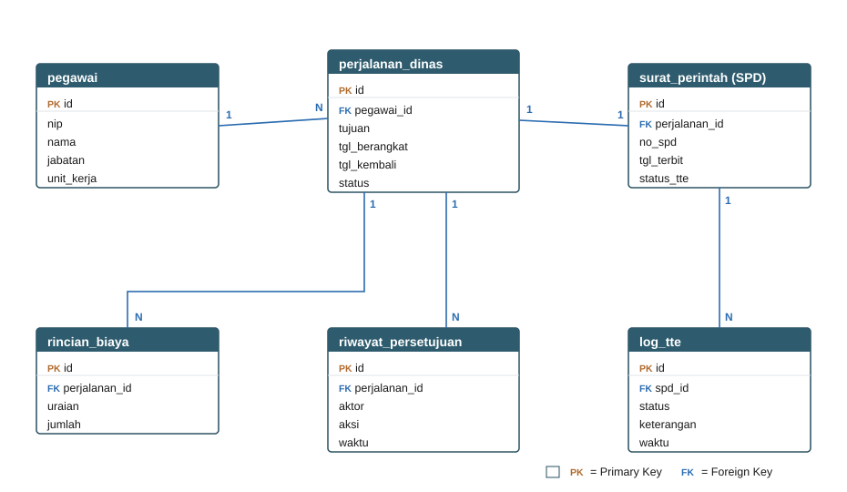
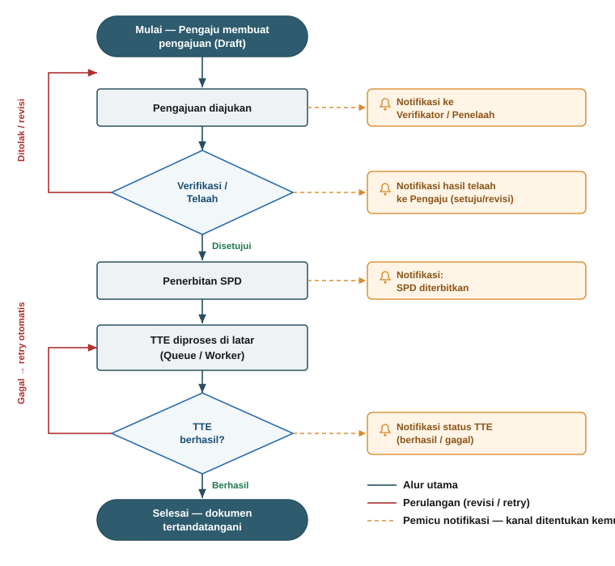

Pada tahap perancangan awal, fokus utama masih pada pemilihan technology stack dan gambaran arsitektur umum. Setelah ditelaah lebih lanjut, perancangan perlu diperluas agar mencakup empat aspek yang belum terurai secara rinci, yaitu (1) perombakan alur proses, (2) optimasi struktur basis data, (3) mekanisme Tanda Tangan Elektronik (TTE) berbasis proses latar, dan (4) rencana implementasi notifikasi. Keempat aspek ini merupakan akar dari sebagian besar kendala yang dilaporkan pada sistem lama, termasuk kegagalan cetak dokumen dan TTE sebagaimana tercatat pada Laporan Kendala Teknis Dinas Kesehatan Kota Kendari (17 Juni 2026).
Type: Exception
Message: FPDF error: Image file has no extension and no type was specified
Filename: /var/www/html/application/third_party/fpdf/fpdf.php (Line 541)
Backtrace: .../controllers/telaah/laporan → Function: cetak_spd
| Komponen | Teknologi | Keterangan |
|---|---|---|
| Bahasa Pemrograman | PHP 8.4 | Versi terbaru, performa & keamanan lebih baik |
| Framework Backend | Laravel | Kerangka kerja modern, aktif diperbarui, ekosistem luas |
| Template / UI | Blade + Tailwind CSS | Antarmuka responsif & modern |
| Basis Data | MySQL / PostgreSQL | RDBMS matang untuk data transaksi dinas |
| Cetak Dokumen | Pustaka PDF modern | Penanganan gambar/kop & galat lebih baik |
| Tanda Tangan Elektronik | Integrasi TTE (mis. BSrE) | Penandatanganan dokumen resmi yang sah |
| Kontainerisasi | Docker | Konsistensi lingkungan dev & produksi |
Pada sistem lama, seluruh tahapan — mulai dari input data, verifikasi/telaah, cetak dokumen, hingga pemrosesan TTE — dijalankan dalam satu rangkaian proses yang saling bergantung dan terkonsentrasi pada satu kontroler berukuran besar (mis. controllers/telaah/laporan yang memuat fungsi cetak_spd). Akibatnya, ketika satu langkah gagal — seperti galat pemuatan gambar kop pada pustaka FPDF — seluruh rantai proses ikut terhenti, termasuk penerbitan dokumen dan TTE.
Perancangan sistem baru memisahkan proses tersebut menjadi tahapan berstatus (state-based workflow) yang berdiri sendiri dan dapat diaudit:
Setiap tahapan memiliki status eksplisit yang tersimpan di basis data, bukan sekadar hasil eksekusi berurutan dalam satu fungsi. Dengan pendekatan ini:
| Aspek | Sistem Lama (CodeIgniter 3) | Sistem Baru (Laravel + Livewire) |
|---|---|---|
| Struktur proses | Terpusat pada satu kontroler besar, eksekusi berurutan | Tahapan berstatus yang terpisah dan mandiri |
| Dampak kegagalan | Satu galat menghentikan seluruh rantai proses | Kegagalan terisolasi per tahap, dapat diulang |
| Keterlacakan | Tidak ada riwayat perpindahan status | Riwayat persetujuan lengkap (pelaku, waktu, catatan) |
| Peran pengguna | Bercampur dalam logika kontroler | Terpisah tegas melalui hak akses |
Struktur basis data sistem lama menyulitkan pemeliharaan karena data induk dan data transaksi bercampur serta minim relasi yang tegas. Perancangan baru menata ulang struktur dengan prinsip normalisasi dan keterlacakan:
Optimasi ini menjadi fondasi agar sistem tetap responsif saat menangani data pegawai dan transaksi perjalanan dinas dalam jumlah besar.
Kendala TTE pada sistem lama (berstatus “Masih Gagal” pada laporan Dinas Kesehatan) sebagian bersumber dari pemrosesan TTE yang dijalankan secara langsung (sinkron) bersamaan dengan permintaan cetak pengguna. Model ini rapuh: bila pembuatan PDF gagal atau proses penandatanganan berjalan lama, permintaan pengguna ikut menggantung hingga timeout, dan beban meningkat tajam ketika banyak dokumen ditandatangani dalam waktu bersamaan.
Perancangan baru memindahkan proses TTE ke antrean proses latar (background job/queue) yang ditangani oleh pekerja (worker) terpisah dari permintaan pengguna. Alurnya:
Sistem lama tidak memiliki mekanisme pemberitahuan, sehingga pengguna harus memeriksa status secara manual dan sering tidak menyadari adanya kegagalan (mis. TTE gagal) hingga dilaporkan belakangan. Perancangan baru menyertakan subsistem notifikasi berbasis peristiwa (event-driven) yang memicu pemberitahuan otomatis pada titik-titik penting alur, antara lain: pengajuan diterima, dokumen perlu diverifikasi, SPD diterbitkan, serta keberhasilan atau kegagalan TTE.
Notifikasi dirancang dengan arsitektur yang tidak terikat pada satu kanal tertentu (channel-agnostic), artinya mekanisme pengiriman dipisahkan dari logika pemicunya. Dengan demikian, penentuan kanal pengiriman yang tepat akan dikaji pada tahap berikutnya dan dapat ditambahkan tanpa mengubah alur inti. Notifikasi juga dijalankan melalui antrean latar yang sama, sehingga pengirimannya tidak memperlambat proses utama.
| Peristiwa | Penerima | Tujuan |
|---|---|---|
| Pengajuan diterima | Verifikator/Penelaah | Menandai adanya dokumen baru untuk ditelaah |
| Dokumen diverifikasi/ditolak | Pengaju | Menginformasikan hasil telaah atau permintaan revisi |
| SPD diterbitkan | Pengaju & Penandatangan | Menandai dokumen siap ditandatangani |
| TTE berhasil/gagal | Pengaju & Admin | Konfirmasi penyelesaian atau penanganan kegagalan |
Gambaran umum entitas utama dan relasinya pada perancangan basis data SPPD baru. Data induk (pegawai) dipisahkan dari data transaksi (perjalanan_dinas, surat_perintah, rincian_biaya), dengan tabel riwayat_persetujuan dan log_tte untuk keterlacakan.

Gambar A.1 — Diagram relasi antar-entitas (ERD ringkas) SPPD baru.
Alur proses berstatus dari pengajuan hingga penyelesaian, termasuk perulangan revisi/telaah dan pemrosesan TTE di latar dengan retry otomatis. Titik-titik pemicu notifikasi ditandai di sisi kanan; kanal pengiriman ditentukan pada tahap berikutnya.

Gambar B.1 — Alur pengajuan SPPD baru beserta penempatan titik notifikasi.